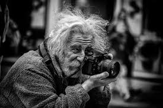

Photography is passion for us. We love to take photographs of different scenarios. Wheneever we go out prefer to carry our mobile phones anddigital cameras to capture beautiful scences as well as pictures of babies and ourself. You can say we are Photoholic people 😍 You can know about photography in interesting way by visiting our website. It has very attractive facts to know about it. We recommed to visit this website to those people who love to be photographar. Like us there are ample of masses who want to adopt it as a profession.
Photography is the art of using a sensor or film to capture and process light. However, the purpose of photography is to capture and share special moments with others. Although the deed is basic, it has the potential to change people's minds. A photograph can tell a thousand different stories and have a deeper meaning. Photographs shot during the conflict are an excellent example.

During the war, numerous eye-opening photographs were disseminated.Some photographs capture the winners' triumphant moment, while others depict the complete carnage of civilians trapped in the crossfire.
But that's not all; photography, especially modern photography and art, has the ability to have various interpretations.
In the hands of Joseph Nicephore Niepce, the first permanent image was captured in 1826 in France. This breakthrough set off a chain reaction, and the rest, as they say, is history.The daguerreotype was created by Joseph Nicole in collaboration with Louis Daguerre. It was the first commercial camera to use silver-plated copper to "print" images.
But it was talented individuals like Alfred Stieglitz, Dorothea Lange, Ansel Adams, and others who popularised photography. Alfred influenced painters to pursue and develop abstract painting styles by introducing the photography industry.
Photography used to be used to provide portraits for people who couldn't afford to buy paintings. Photographs allow individuals to grieve and remember their loved ones who died on the battlefield during the war.On a cold night, lovers might use a photograph to relieve the crushing anguish of missing their loved ones. With the passage of time, photography has come to serve a wider range of functions.
Product photography is based around the sole purpose of selling a product such as food. The photographer should make every item of food and beverages look shinier, mouth-watering, and more delicious than its competitors. Meanwhile, portrait photography aims to tell a story about an individual’s identity, personality, and story. This style is divided into several more types, such as lifestyle portraits, street portraits, and many more, each of them has a different purpose.
There are approximately 60 different styles of photography, but I'll simply go through the most popular. Here's a quick rundown of the seven most popular photography styles.
This is by far the most common type of photography. |
 |
The photographs you see in a fashion magazine or online store are examples of fashion photography. The only objective of this photographic style is to make every fashion item aesthetically beautiful and appealing to its customers. Additionally, entice people to purchase those products.
Fashion photographers should be able to shoot portraits, have a lot of creative ideas floating about in their heads, and enjoy working with stylists, creative directors, models, and other crew members.
The main goal of food photography is to promote the products and entice customers to buy them. No matter how small or large the scale is, every food and beverage business will need this type of photography. You will need a lot of money to build a career in this industry since professional food photography needs a studio and other special equipment.
It means that this industry is promising, especially in the age of the internet, just like now.
Magazines and newspapers frequently employ editorial photography. Every image that appears alongside text is referred regarded as this style. The visual helps the reader grasp the writer's attempt to convey information about events, places, or stories.
You'll need a greater understanding of the subject, sophisticated technique, and advanced composition if you want to be an editorial photographer.
You should have a great sensitivity as a photographer to recognise which viewpoint or subject best depicts the storey that a writer tells.
For each individual, photography signifies something different. The goal is never set in stone and is always shifting.
There are many different forms of photography, all of which are built on a foundation of knowledge.
If you want to learn photography, don't assume you need to invest in a high-end camera right away; your smartphone camera will suffice. Your main goal should be to improve your skills.
The best photographic advice I can provide is to maintain a high level of discipline and excitement. Make it a point to study and practise every day. Then, sooner than you think, you'll notice the results.